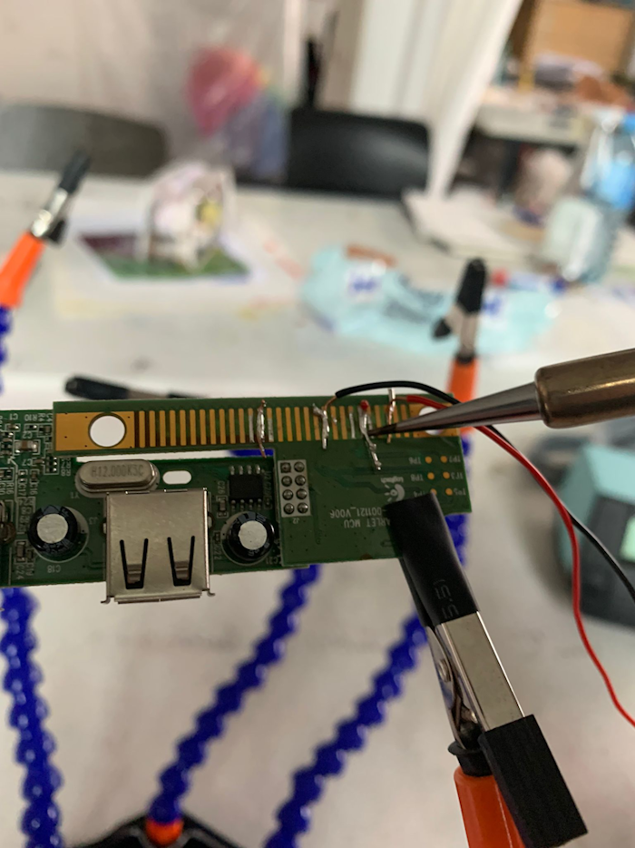
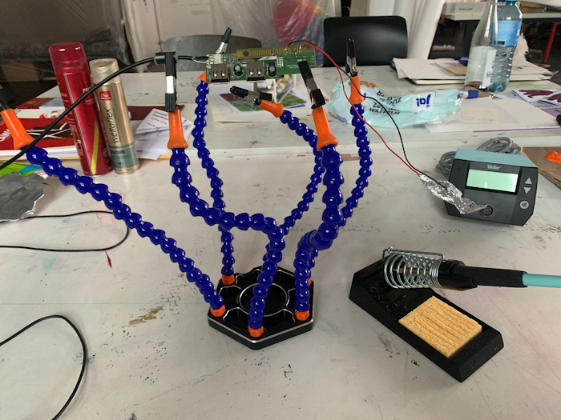

Der "Lüfter" war unser erstes kleines Gruppenprojekt. Wir bauten ein Mechanismus der einen nach einer gewissen Zeit an das Lüften erinnern soll. Dazu gibt es einen Timer der mit zwei Kontakten verbunden ist. Diese befinden sich an der Fensterinnenseite und am Rahmen. Schließt sich dieser Schaltkreis, wird der Timer ausgelöst.

Um den Schaltkreis zu bauen brauchten wir ein Board aus einer Tastatur. Diese verbindet einzele elektrische Impulse mit Tastendrücken. So haben wir mit zwei Kabeln mehrere Kombinationen an den Boardkontakten auspribiert bis wir auf dem Bildschirm einen Buchstaben schreiben konnten Diese haben wir dann kurz mit einem Stift markiert und anschließend mit den Kabelenden zusammengelötet. Die anderen enden der Kabel wurden dann mit Alufolie verklebt um so die Kontaktfläsche am Fenster zu vergrößern. Diese konnten wir dann am Fenster anbringen.
Das löten war etwas komplett neues fü viele von uns. Einige wenige hatten ein wenig erfahrung und konnten so den unerfahrenen ein bisschen die Angst nehmen. Der heiße und manchmal auch dampfende Kolben war anfangs schon ein wenig eunschüchternd. Aber nach ein paar versuchen, hatte jeder in der Gruppe ein Teil gelötet und das meist ohne große Pronleme. Es war auch interessant zu sehen, dass Technik und Handwerk doch so nah beieinander sind.